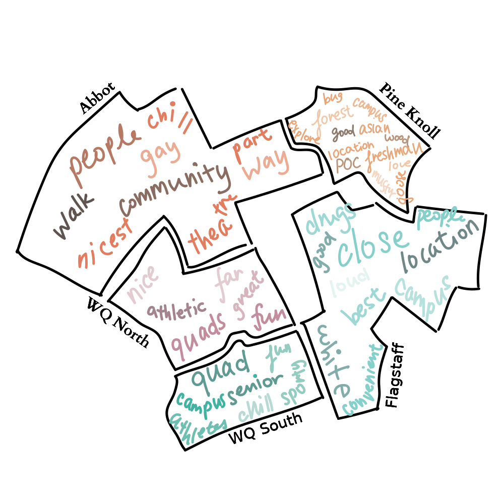

Housing at Phillips Academy
Dorm life is arguably the most important part of a student's time here at a boarding school like Phillips Academy. However, experiences with residential life here are not uniformly positive, and the apparent opaqueness of the residential system does little to address student concerns. Dorm stereotypes persist, even through many iterations and revisions of the dorm assignment process. In our investigation, we examined student beliefs about the housing process and reached out to P.A. faculty, as well as faculty from other boarding schools and colleges, about the housing system. Our group of six students at the Workshop analyzed the agenda of the school administration and aimed to find places in which bias—conscious or unconscious—exist within the current dorm assignment system at Andover. Through our investigation, we examined factors and dynamics that shape both the current housing system and its repurcussions. Below, we detail the results of our investigation, in the hopes that this document may provide a springboard for public conversation about Andover's housing process.
The current housing system
At the time of writing, in the 2021-2022 school year, the housing process focuses on separating freshman/lowers and uppers/seniors. As students get older, they gradually have more and more housing options. Typically, 9/10 dorms and 11/12 dorms are large dorms with twenty or more students, whereas stacks are small dorms with room for at most around ten people that are only available to upperclassmen.
a visual explainer
In years prior, Andover used a lottery system—with some additional information—for dorm assignments. Students could, if desired, put down a roommate, rank their cluster preference, and state whether they preferred a small or large dorm. Then they would receive a lottery number, which would determine their priority in getting the dorm of their choice. Even if the numbers and, by extension, the dorm assignments, were random, students oftentimes felt that the lottery system was personal. To some extent, there were true loopholes in the system, including one where upperclassmen could pull in lowerclassmen in order to help them be placed into a desirable dorm.
on the old lottery system
And so, based on their luck, the number you drew, you could go to various dorms.
And that was a lot of drama too. I don't think you can escape drama, maybe, because housing feels really impactful to student experience.
Dr. Esty, on the old lottery system
The existence of differences is universally agreed upon
Everyone we interviewed agreed that differences exist between the dorms at P.A. Furthermore, each cluster is associated with its own stereotypes. Flagstaff is associated with the privileged, white elite and drug use; Pine Knoll with nature and people of color; and Abbot with theater and queer people. Some dorms also have their own reputations, notably Rockwell and Foxcroft being associated with drug use and the Andover Inn with privilege. To what extent these reputations are deserved are uncertain, but they are rather consistent amongst the students we polled.
Most common words used to describe each cluster, from our survey.
At Rockwell, I picture a few kids who do drugs peer pressuring other guys to do drugs and then by the end of the year all the Rockwell guys do drugs.
A student on Rockwell, from our survey
homophily
Why these differences exist to begin with is our key question. To some extent, it can be explained by student choice and the natural tendency for similar people to seek out each other known as homophily. Students tend to choose dorms based on the current reputations of those dorms; they will likely choose dorms where they think they'll fit in—where people are similar to them. The natural result is for dorms to be segregated along racial and economic lines, as well as along different interests and levels of athleticism. A dorm's reputation is a self-fulfilling prophecy. It attracts students who fit that reputation to that dorm, perpetuating that dorm's status in the minds and hearts of students.
Just because this is natural does not mean it is desirable, however. Diverse communities are incredibly valuable, and all students have much to gain by living with many different types of people. On the other hand, communities dedicated to common interests or backgrounds can be incredibly fulfilling and meaningful. Thus a balance must be struck between comfort and exploration.
Through the years
Click on the name of a dorm on the right to track its evolution through time.Peer dynamics in dorms
While students exert influence on their dorms, they themselves are also changed by the dorm they live in. Some people we interviewed suggested that students within dorms are alike because of their influence on each other. Depending on the dorm, many times students will try to adapt and 'fit in' to that specific dorm's culture. During our interviews, faculty and staff noted that they saw a big difference in the way students presented themselves and acted before and after living in specific dorms.
...there was a strong toxic femininity culture where there was a lot of internalized sexism in the dorms, so girls would arrive in the dorm and start to like, dress differently or to focus a lot more on their social life. There was drinking in the dorm, possibly also other drug use...
Ms. Staff, on Paul Revere
underclassmen and upperclassmen
One of the driving reasons behind the switch from 10/11/12 dorms to 9/10 and 11/12 dorms is the potential for upperclassmen to negatively impact lowers new to the dorm. This outcome is by no means absolute and, according to 9/10 dorm house counselors, the main intention is to have lowers acting as mentors for the freshmen, preparing them to take on student leadership roles their upper year. There have been instances in 10/11/12 dorms, however, of substance abuse and cultivation of toxic culture within the lower population as a result of peer pressure from uppers and seniors. Lowers are separated from their freshman dorm friends, and their isolation made them vulnerable to negative influence from the upperclassmen. (to be edited, fleshed out)